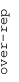
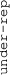

These results are also available as PDF and EPS documents.
Depending on your display resolution, scrolling or zooming may be necessary.
|  |
| 3 |
| 0 |
| -3 |
|  |
| GO_NEURON_FATE_COMMITMENT GO_NEURON_FATE_COMMITMENT | |||||||||||
| GO_HOMOPHILIC_CELL_ADHESION_VIA_PLASMA_MEMBRANE_ADHESION_MOLECULES GO_HOMOPHILIC_CELL_ADHESION_VIA_PLASMA_MEMBRANE_ADHESION_MOLECULES | |||||||||||
| GO_TRANSMEMBRANE_RECEPTOR_PROTEIN_KINASE_ACTIVITY GO_TRANSMEMBRANE_RECEPTOR_PROTEIN_KINASE_ACTIVITY | |||||||||||
| GO_EOSINOPHIL_MIGRATION GO_EOSINOPHIL_MIGRATION | |||||||||||
| GO_EXTRACELLULAR_MATRIX_STRUCTURAL_CONSTITUENT GO_EXTRACELLULAR_MATRIX_STRUCTURAL_CONSTITUENT | |||||||||||
| GO_MONOOXYGENASE_ACTIVITY GO_MONOOXYGENASE_ACTIVITY | |||||||||||
| GO_POSITIVE_REGULATION_OF_STEM_CELL_DIFFERENTIATION GO_POSITIVE_REGULATION_OF_STEM_CELL_DIFFERENTIATION | |||||||||||
| GO_NUCLEOSOME_POSITIONING GO_NUCLEOSOME_POSITIONING | |||||||||||
| GO_PODOSOME GO_PODOSOME | |||||||||||
| GO_MAP_KINASE_PHOSPHATASE_ACTIVITY GO_MAP_KINASE_PHOSPHATASE_ACTIVITY | |||||||||||
| GO_LATE_ENDOSOME_MEMBRANE GO_LATE_ENDOSOME_MEMBRANE | |||||||||||
| GO_RESPONSE_TO_AMINO_ACID_STARVATION GO_RESPONSE_TO_AMINO_ACID_STARVATION | |||||||||||
| GO_POSITIVE_REGULATION_OF_INTERLEUKIN_10_SECRETION GO_POSITIVE_REGULATION_OF_INTERLEUKIN_10_SECRETION | |||||||||||
| GO_PROTEIN_ACETYLTRANSFERASE_COMPLEX GO_PROTEIN_ACETYLTRANSFERASE_COMPLEX | |||||||||||
| GO_MITOCHONDRIAL_MEMBRANE_ORGANIZATION GO_MITOCHONDRIAL_MEMBRANE_ORGANIZATION | |||||||||||
| GO_PROTEIN_SERINE_THREONINE_KINASE_ACTIVATOR_ACTIVITY GO_PROTEIN_SERINE_THREONINE_KINASE_ACTIVATOR_ACTIVITY | |||||||||||
| GO_RESPIRASOME GO_RESPIRASOME | |||||||||||
| GO_NUCLEAR_HORMONE_RECEPTOR_BINDING GO_NUCLEAR_HORMONE_RECEPTOR_BINDING | |||||||||||
| GO_FATTY_ACID_BETA_OXIDATION GO_FATTY_ACID_BETA_OXIDATION | |||||||||||
| GO_NUCLEAR_UBIQUITIN_LIGASE_COMPLEX GO_NUCLEAR_UBIQUITIN_LIGASE_COMPLEX | |||||||||||
| GO_PROTEIN_DEGLYCOSYLATION GO_PROTEIN_DEGLYCOSYLATION | |||||||||||
| GO_RNA_POLYADENYLATION GO_RNA_POLYADENYLATION | |||||||||||
| GO_RAB_GTPASE_BINDING GO_RAB_GTPASE_BINDING | |||||||||||
| GO_CHONDROITIN_SULFATE_PROTEOGLYCAN_METABOLIC_PROCESS GO_CHONDROITIN_SULFATE_PROTEOGLYCAN_METABOLIC_PROCESS | |||||||||||
| GO_RNA_BINDING_INVOLVED_IN_POSTTRANSCRIPTIONAL_GENE_SILENCING GO_RNA_BINDING_INVOLVED_IN_POSTTRANSCRIPTIONAL_GENE_SILENCING | |||||||||||
| GO_ODORANT_BINDING GO_ODORANT_BINDING | |||||||||||
| GO_TRACE_AMINE_RECEPTOR_ACTIVITY GO_TRACE_AMINE_RECEPTOR_ACTIVITY | |||||||||||
| GO_KERATIN_FILAMENT GO_KERATIN_FILAMENT | |||||||||||
| GO_BITTER_TASTE_RECEPTOR_ACTIVITY GO_BITTER_TASTE_RECEPTOR_ACTIVITY | |||||||||||
| GO_HORMONE_ACTIVITY GO_HORMONE_ACTIVITY | |||||||||||
| GO_CONNEXIN_COMPLEX GO_CONNEXIN_COMPLEX | |||||||||||
| GO_GAS_TRANSPORT GO_GAS_TRANSPORT | |||||||||||
| GO_ANTIMICROBIAL_HUMORAL_RESPONSE GO_ANTIMICROBIAL_HUMORAL_RESPONSE | |||||||||||
| GO_PEPTIDE_RECEPTOR_ACTIVITY GO_PEPTIDE_RECEPTOR_ACTIVITY | |||||||||||
| GO_TYPE_I_INTERFERON_RECEPTOR_BINDING GO_TYPE_I_INTERFERON_RECEPTOR_BINDING | |||||||||||
| GO_POSTSYNAPTIC_NEUROTRANSMITTER_RECEPTOR_ACTIVITY GO_POSTSYNAPTIC_NEUROTRANSMITTER_RECEPTOR_ACTIVITY | |||||||||||
| GO_CYSTEINE_TYPE_ENDOPEPTIDASE_INHIBITOR_ACTIVITY GO_CYSTEINE_TYPE_ENDOPEPTIDASE_INHIBITOR_ACTIVITY | |||||||||||
| GO_MITOCHONDRIAL_GENE_EXPRESSION GO_MITOCHONDRIAL_GENE_EXPRESSION | |||||||||||
| GO_CHROMOSOME_CENTROMERIC_REGION GO_CHROMOSOME_CENTROMERIC_REGION | |||||||||||
| GO_S_ADENOSYLMETHIONINE_DEPENDENT_METHYLTRANSFERASE_ACTIVITY GO_S_ADENOSYLMETHIONINE_DEPENDENT_METHYLTRANSFERASE_ACTIVITY | |||||||||||
| GO_VIRAL_GENE_EXPRESSION GO_VIRAL_GENE_EXPRESSION | |||||||||||
| GO_UBIQUITIN_LIKE_PROTEIN_BINDING GO_UBIQUITIN_LIKE_PROTEIN_BINDING | |||||||||||
| GO_VESICLE_TARGETING GO_VESICLE_TARGETING | |||||||||||
| GO_SPLICEOSOMAL_COMPLEX GO_SPLICEOSOMAL_COMPLEX | |||||||||||
| GO_CELL_REDOX_HOMEOSTASIS GO_CELL_REDOX_HOMEOSTASIS | |||||||||||
| GO_MCM_COMPLEX GO_MCM_COMPLEX | |||||||||||
| GO_TELOMERE_ORGANIZATION GO_TELOMERE_ORGANIZATION | |||||||||||
| GO_FC_RECEPTOR_SIGNALING_PATHWAY GO_FC_RECEPTOR_SIGNALING_PATHWAY | |||||||||||
| GO_NUCLEAR_INNER_MEMBRANE GO_NUCLEAR_INNER_MEMBRANE | |||||||||||
| GO_CENTRIOLE GO_CENTRIOLE | |||||||||||
| GO_NUCLEOCYTOPLASMIC_CARRIER_ACTIVITY GO_NUCLEOCYTOPLASMIC_CARRIER_ACTIVITY | |||||||||||
| GO_EXORIBONUCLEASE_COMPLEX GO_EXORIBONUCLEASE_COMPLEX | |||||||||||
| GO_INTERLEUKIN_23_MEDIATED_SIGNALING_PATHWAY GO_INTERLEUKIN_23_MEDIATED_SIGNALING_PATHWAY | |||||||||||
| GO_REGULATION_OF_DNA_DEMETHYLATION GO_REGULATION_OF_DNA_DEMETHYLATION | |||||||||||
| GO_DOUBLE_STRANDED_RNA_BINDING GO_DOUBLE_STRANDED_RNA_BINDING | |||||||||||
| GO_TRNA_WOBBLE_URIDINE_MODIFICATION GO_TRNA_WOBBLE_URIDINE_MODIFICATION | |||||||||||
| GO_PRERIBOSOME GO_PRERIBOSOME | |||||||||||
| GO_CELLULAR_AMINO_ACID_BIOSYNTHETIC_PROCESS GO_CELLULAR_AMINO_ACID_BIOSYNTHETIC_PROCESS | |||||||||||
| GO_CARGO_RECEPTOR_ACTIVITY GO_CARGO_RECEPTOR_ACTIVITY | |||||||||||
| GO_MYOFILAMENT GO_MYOFILAMENT | |||||||||||
| GO_SODIUM_ION_TRANSMEMBRANE_TRANSPORTER_ACTIVITY GO_SODIUM_ION_TRANSMEMBRANE_TRANSPORTER_ACTIVITY | |||||||||||
| GO_PIRNA_METABOLIC_PROCESS GO_PIRNA_METABOLIC_PROCESS | |||||||||||
| GO_BASIC_AMINO_ACID_TRANSMEMBRANE_TRANSPORT GO_BASIC_AMINO_ACID_TRANSMEMBRANE_TRANSPORT |